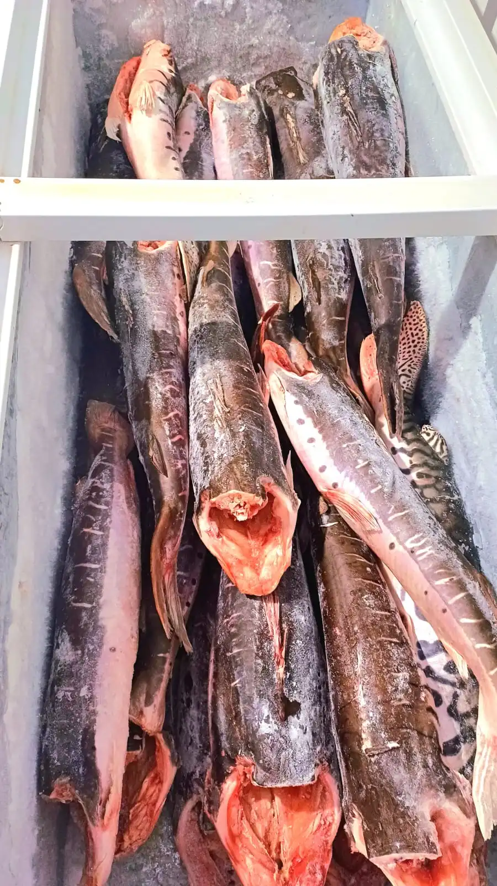
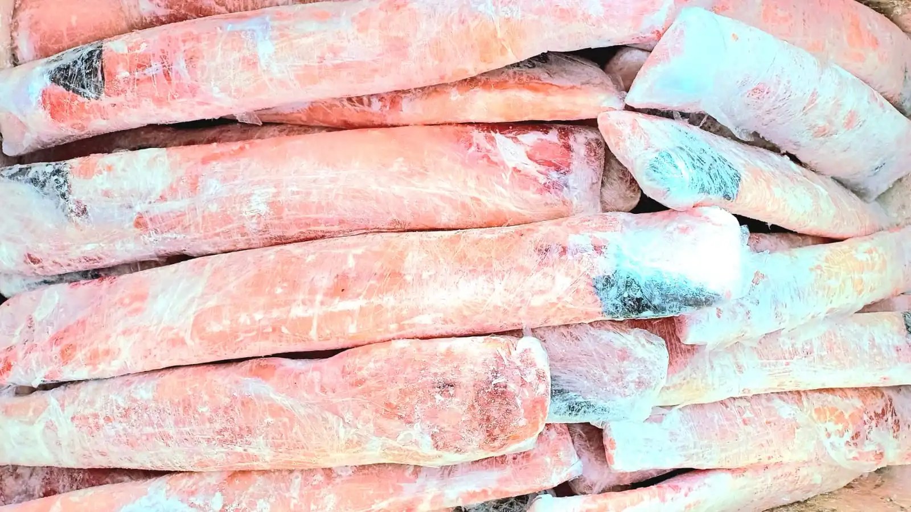
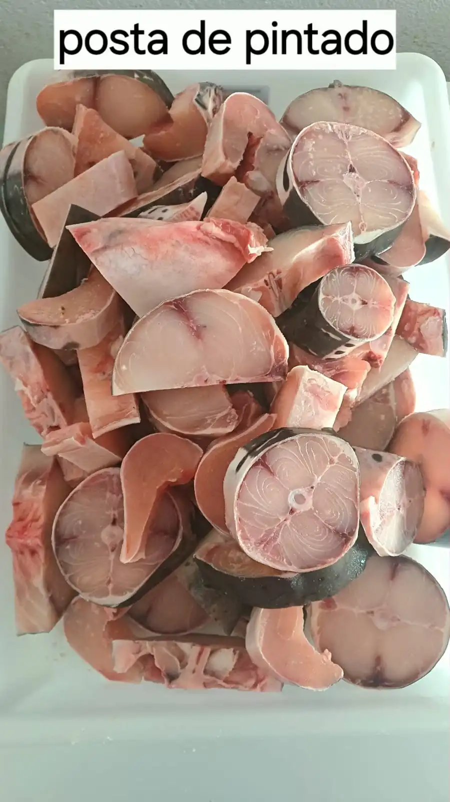

Pintado Fresco
Pseudoplatystoma corruscans
Escolha o Corte:
Retire na loja: R. Bom Jardim, 379 — Centro, Cáceres.
Tudo Sobre o Pintado: O Rei dos Peixes do Rio Paraguai
O Pintado (Pseudoplatystoma corruscans), também conhecido como Surubim em algumas regiões do Brasil, é considerado um dos peixes de água doce mais nobres e apreciados da culinária brasileira. Encontrado abundantemente na bacia do Rio Paraguai, especialmente nas águas que banham o Pantanal mato-grossense, o Pintado se destaca por sua carne branca, firme e de sabor delicado, com pouquíssimas espinhas intermusculares.
Características do Pintado
O Pintado é um peixe de couro — ou seja, não possui escamas. Seu corpo é alongado e robusto, com manchas escuras sobre uma pele de tonalidade cinza-prateada, o que lhe confere o nome popular. Pode atingir até 1,5 metro de comprimento e pesar mais de 80 quilos em ambientes naturais, embora os exemplares comercializados pesem geralmente entre 3 e 15 quilos.
Entre suas principais características gastronômicas, estão a textura firme que mantém a forma mesmo após longos cozimentos, a baixa quantidade de gordura entremeada, e o sabor suave que harmoniza com temperos variados — do simples sal e limão ao sofisticado molho de alcaparras.
Dicas de Preparo do Pintado
A versatilidade do Pintado na cozinha é um dos seus maiores atrativos. Confira as principais formas de preparo que realçam o melhor deste peixe:
- Caldo de Pintado: O prato mais tradicional do Pantanal. Preparado com tomate, pimentão, cebolinha e coentro, o caldo de Pintado é servido fumegante e é considerado um patrimônio culinário da região.
- Pintado Assado na Brasa: Postas grossas temperadas com sal grosso e limão, grelhadas lentamente sobre brasas de madeira nobre. O resultado é uma carne suculenta com sabor defumado.
- Pintado ao Forno: Filés dispostos sobre uma cama de legumes com azeite, alho e ervas finas. Ideal para refeições em família.
- Moqueca de Pintado: Uma variação pantaneira da moqueca baiana, usando leite de coco, dendê e pimentões coloridos. O Pintado mantém a firmeza mesmo em cozimentos prolongados.
- Pintado Empanado: Filés cortados em tiras, empanados em farinha de mandioca e fritos até dourar. Um petisco irresistível.
Valor Nutricional
O Pintado é uma excelente fonte de proteínas de alto valor biológico, fornecendo em média 20g de proteína por cada 100g de carne. Além disso, é rico em ômega-3, fósforo e vitaminas do complexo B. Por ser um peixe magro, é uma opção saudável para quem busca uma alimentação equilibrada sem abrir mão do sabor.
Sustentabilidade e Pesca Responsável
Na Peixaria Rio Paraguai, trabalhamos apenas com Pintado proveniente de pesca regulamentada e dentro do período de captura permitido pelos órgãos ambientais de Mato Grosso. Respeitamos o período de piracema (reprodução) e os limites de tamanho mínimo estabelecidos pela legislação, garantindo que as futuras gerações também possam desfrutar deste peixe magnífico.
Escolher o Pintado da Peixaria Rio Paraguai é ter a certeza de levar para casa um produto fresco, de qualidade e com responsabilidade ambiental.